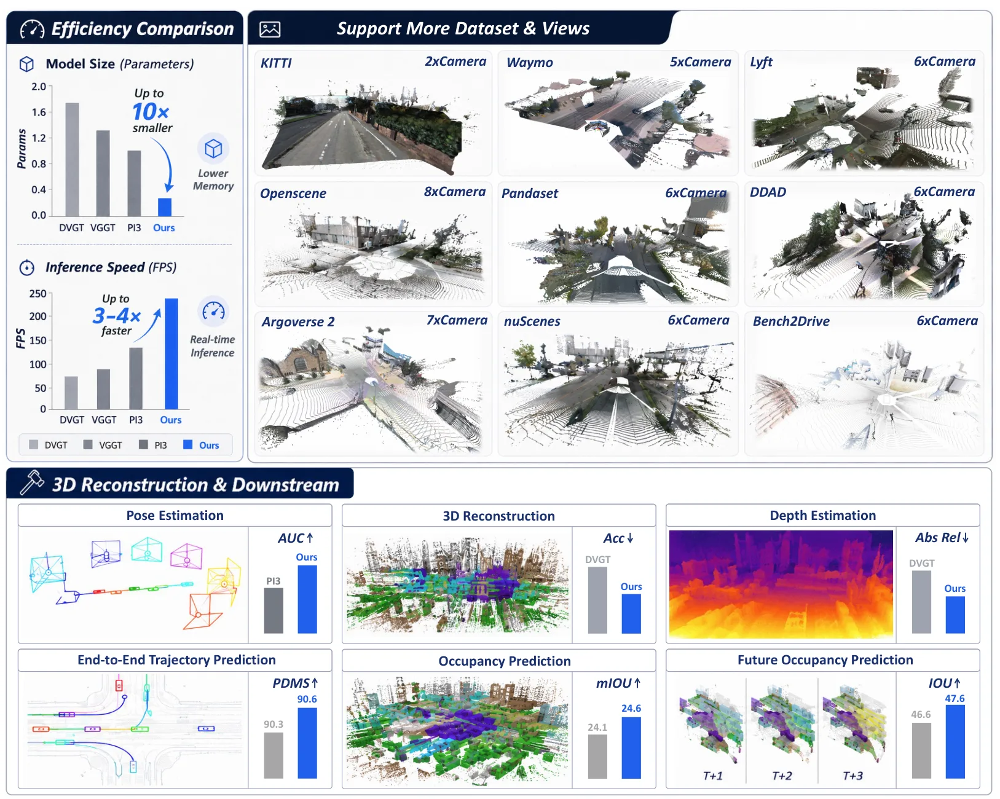
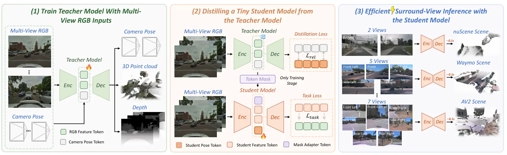
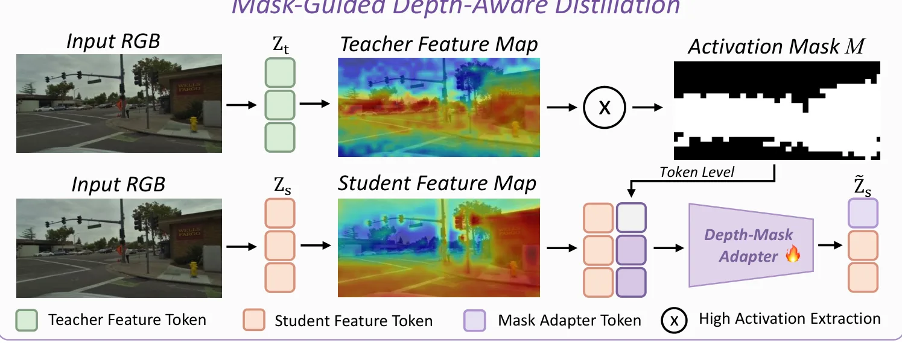
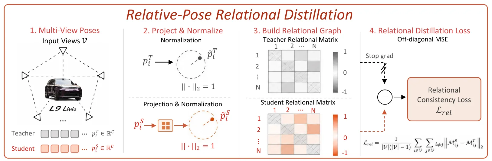

LiAuto-GeoX：高效的几何约束驾驶 TransformerLiAuto-GeoX: Efficient Grounded Driving Transformer
与自动驾驶稠密重建、环视几何、多相机一致性和下游占据/预测任务相关，实时性指标突出；但与 GNSS/SLAM 后端融合的直接关系较弱。
一句话工作总结
用 LiDAR 几何先验和蒸馏把大规模驾驶三维重建模型压缩成实时车载几何表示。
摘要
LiAuto-GeoX 面向自动驾驶实时稠密三维场景理解，先用大规模环视数据和稀疏 LiDAR 先验训练高容量 driving geometry model，再通过几何保持蒸馏压缩为 155M 参数车载模型。蒸馏包括 mask-guided depth-aware distillation 和 relative-pose relational distillation，以保留远距离几何、细粒度度量结构和跨视角一致性；论文报告 KITTI 上 220 FPS，并能迁移到轨迹预测、占据预测和未来帧预测等下游任务。
Dense 3D reconstruction has demonstrated immense potential for spatial understanding, yet its viability as a real-time, onboard representation for autonomous driving remains an open challenge. Existing large-scale visual geometry models typically require substantial computational resources and lack the long-range geometric fidelity, surround-view consistency, and real-time efficiency demanded by dynamic driving environments. To bridge this gap, we present \textbf{LiAuto-GeoX}, an efficient grounded driving transformer designed for deployable, ego-centric 3D scene understanding. Our approach begins by learning a high-capacity driving geometry model from large-scale surround-view data, utilizing sparse LiDAR priors to provide robust geometric grounding in distant, ambiguous, or structure-sparse regions. We then instantiate this capability into a highly compact 155M-parameter onboard model through a novel geometry-preserving distillation framework. This framework employs mask-guided depth-aware distillation to retain fine-grained metric structures by emphasizing geometrically informative regions, and relative-pose relational distillation to enforce cross-view spatial consistency through pose-induced geometric relations. Extensive evaluations reveal that \textbf{LiAuto-GeoX} runs at 220 FPS on KITTI while maintaining high-fidelity dense reconstruction, enabling real-time deployment. The learned geometry transfers seamlessly to downstream autonomy tasks, achieving 90.6 PDMS in trajectory prediction, 24.63 mIoU in occupancy prediction, and 47.67 IoU in future-frame prediction. These all demonstrate that efficient dense 3D reconstruction can transcend its traditional role as a perception target to serve as a scalable, foundational geometric representation for next-generation autonomous driving.
中文解读摘录
图表/页面预览
{kind=link}

{kind=link}

{kind=link}

{kind=link}
